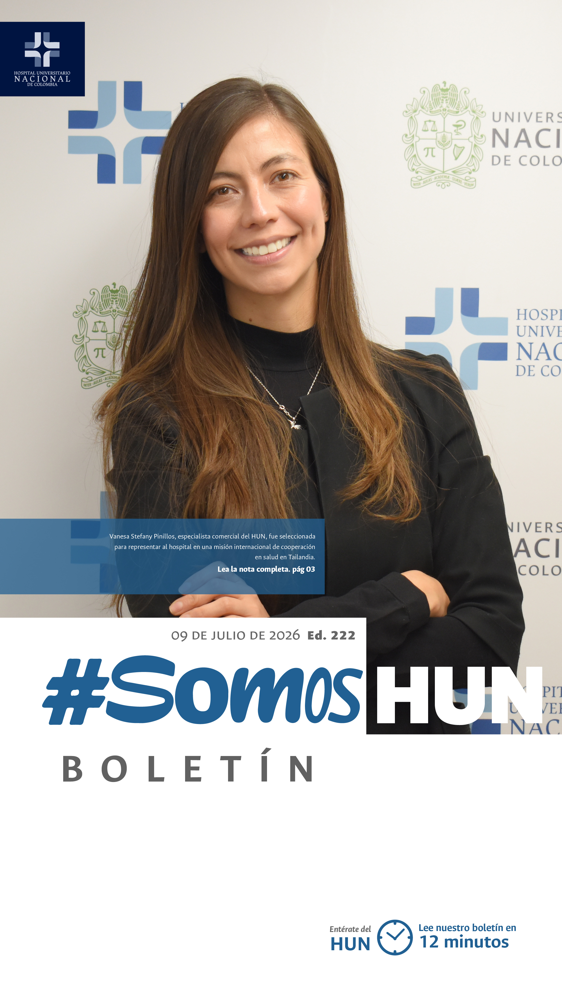
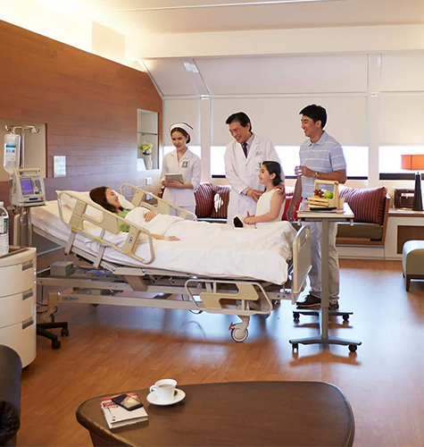
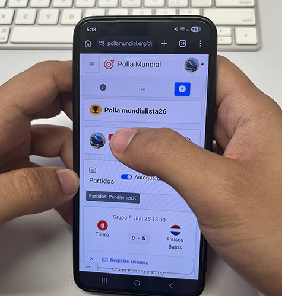
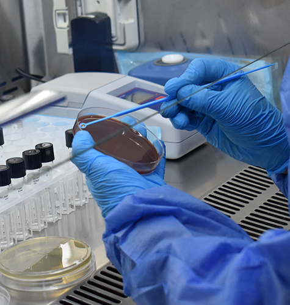
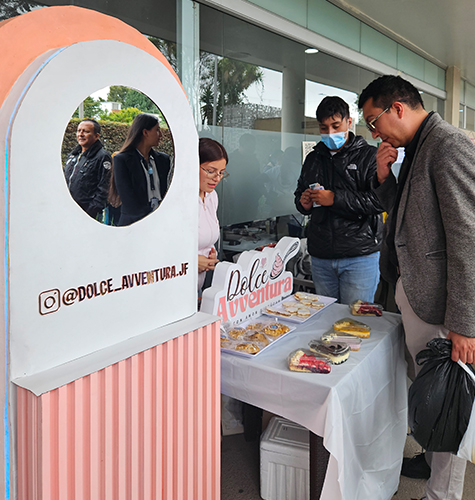
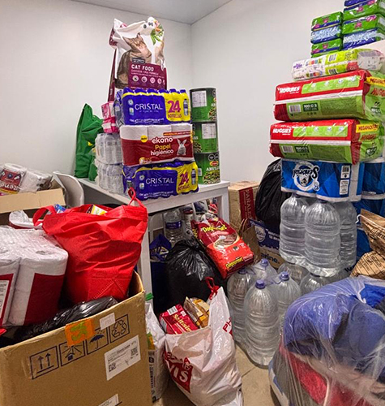

Ver todos los boletines
El HUN participará en una misión internacional en Tailandia sobre turismo médico con estándares globales
El Hospital Universitario Nacional de Colombia fue seleccionado, junto a cuatro empresas, para hacer parte de la delegación colombiana que participará en esta experiencia de cooperación internacional orientada al fortalecimiento de capacidades en modelos de atención, infraestructura y servicios de salud con estándares globales.Leer más

¿Apuestas al fútbol? Pilas con la adicción
Mientras el mundo tiene los ojos puestos en la cancha, el mundo vive una epidemia silenciosa, el auge de la ludopatía, un trastorno adictivo a las apuestas impulsado por la Copa Mundial de Fútbol de 2026. Según la OMS, 70 millones de personas en la Región de las Américas padecen esta condición, una combinación de pasión deportiva, acceso inmediato desde el celular y una publicidad digital, que ha creado la tormenta perfecta de ansiedad, deudas extremas y colapso emocional.Leer más

Enfermedades zoonóticas comunes e ignoradas
Aunque pasan desapercibidas, las enfermedades que se transmiten de los animales a las personas representan uno de los mayores desafíos para la salud pública a nivel mundial. Según la Organización Mundial de Sanidad Animal, el 60 % de las enfermedades infecciosas que afectan a los seres humanos son zoonóticas. Las más comunes se producen al interior de los hogares por desconocimiento.Leer más

Ideas que transforman: El HUN presentó su décima edición de la Feria de Emprendimientos
Durante dos días consecutivos, el HUN se transformó en un espacio de innovación y apoyo local con la celebración de la décima edición de nuestra Feria de Emprendimientos HUN. Este esperado evento reunió a colaboradores, estudiantes y sus familiares, quienes presentaron una variada oferta comercial, generando impacto social dentro de nuestra comunidad.Leer más

Despertamos nuestra solidaridad con Venezuela en el HUN
El pasado 24 de junio, Venezuela padeció uno de los terremotos más intensos registrados en el país durante el último siglo, con una magnitud de 7,5, dejando hasta el momento 3.811 muertos y más de 16.000 heridos, además de graves daños en la infraestructura y miles de damnificados. El HUN se suma a esta cooperación.Leer más